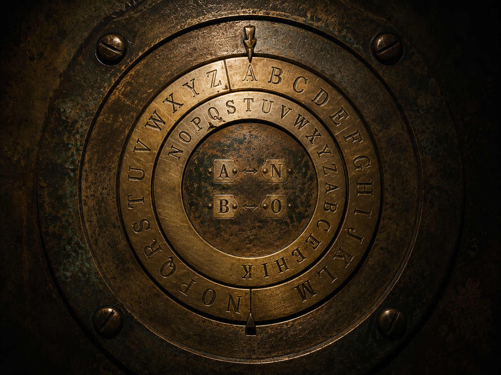

▒▒▒▒▒▒▒▒▒▒▒▒▒▒▒▒▒▒▒▒▒▒▒▒▒▒▒▒▒▒▒▒▒▒ · D E S C E N T · 09 / 40 · ▒▒▒▒▒▒▒▒▒▒▒▒▒▒▒▒▒▒▒✶▒▒▒▒▒▒▒▒▒▒▒▒▒▒

Down the slope, one careful step at a time.
Each pass over the data, a turn of the wheel.
They counted the turns.
the wheel has come halfway round; each letter wears its opposite's coat.